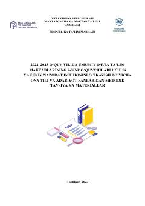

OT9-sinflar uchun ona tili va adabiyot fanidan yakuniy nazorat imtihoni materiallari va metodik tavsiyalar.
Mazkur metodik tavsiya va materiallar umumiy o'rta ta'lim maktablarining 9-sinf o'quvchilari uchun ona tili va adabiyot fanidan yakuniy nazorat imtihonlarini o'tkazishga mo'ljallangan. Qo'llanmada imtihon materiallari, ijodiy bayon yozish tartibi va uni baholash mezonlari batafsil bayon etilgan.